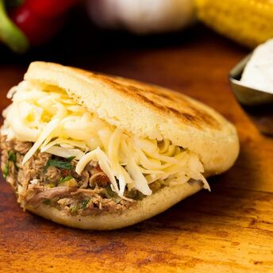
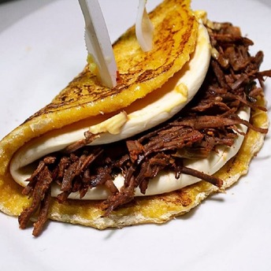
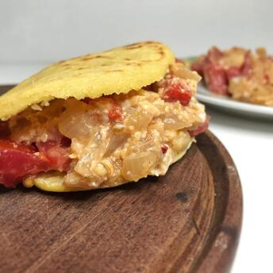
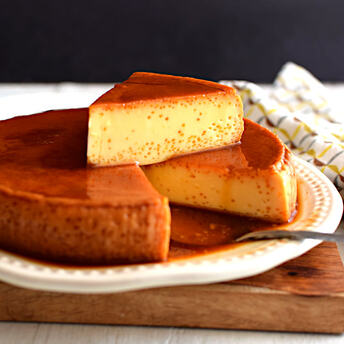
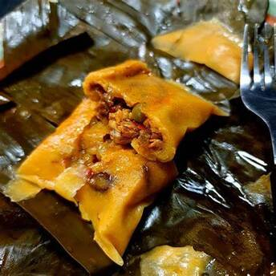
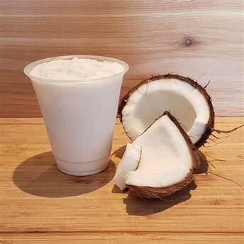

Polvorosa de Pollo
Pastel salado con masa crujiente y un delicioso relleno de pollo y especias.
Ver Receta





Ensalada de Quinoa
Ensalada fresca de quinoa con verduras, ideal para una cena saludable.
Ver Receta


Empanadas Andinas
Empanadas crujientes rellenas de carne o queso, típicas de los Andes venezolanos.
Ver Receta